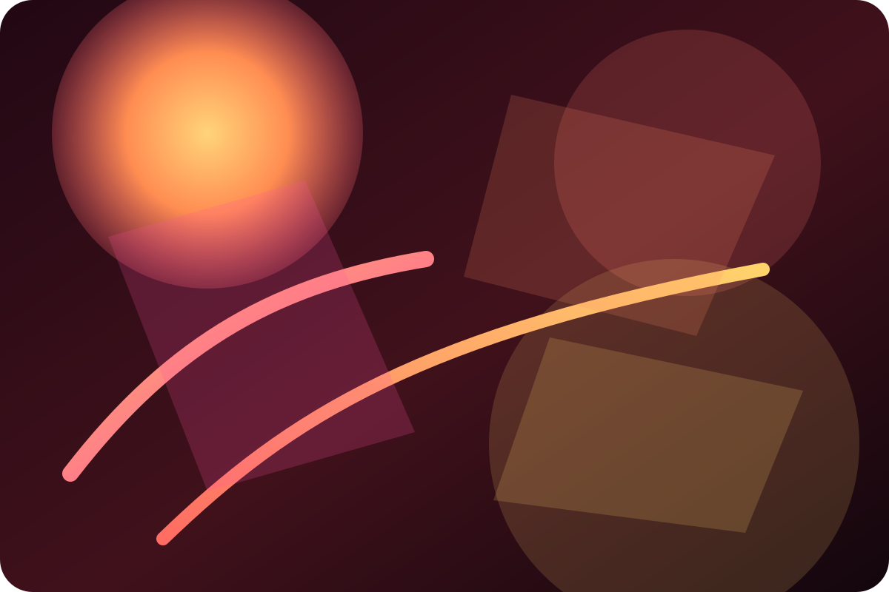
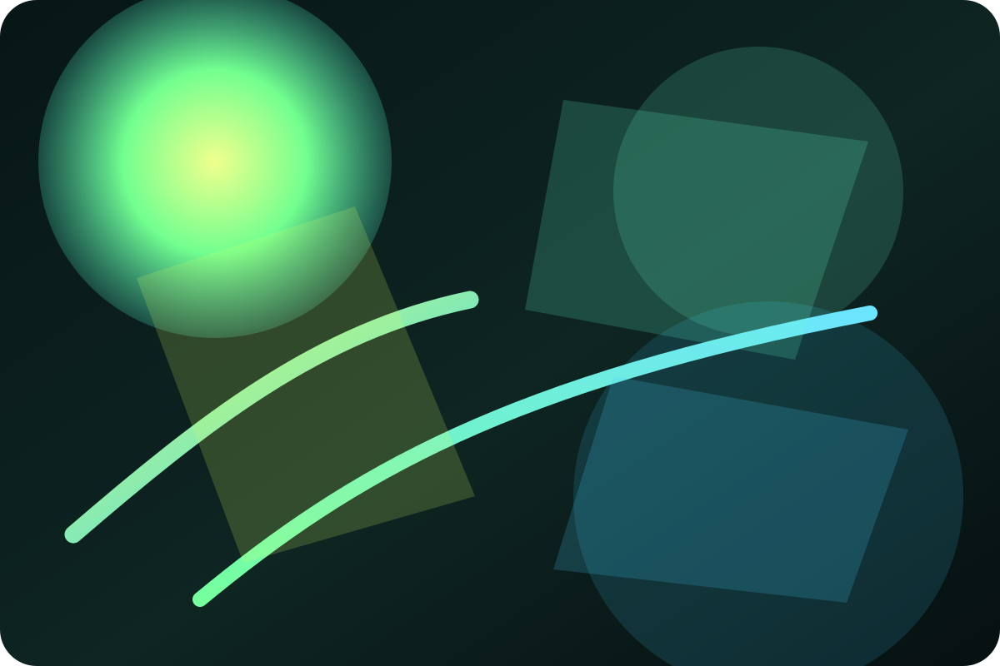

Bind once. Let CSS drive the visual response.
.card {
transform: rotateX(calc((0.5 - var(--live-pointer-y-ratio)) * 18deg))
rotateY(calc((var(--live-pointer-x-ratio) - 0.5) * 18deg));
}Runtime CSS Showcase
JavaScript observes runtime state; CSS consumes that state as custom properties.
This page shows how prop-for-that turns runtime browser facts into --live-* and --const-* values so a Razor Pages or HTMX app can hand most visual behavior back to CSS.
Bind once. Let CSS drive the visual response.
.card {
transform: rotateX(calc((0.5 - var(--live-pointer-y-ratio)) * 18deg))
rotateY(calc((var(--live-pointer-x-ratio) - 0.5) * 18deg));
}Interactive Showcase
Global sources write to :root. Element sources write to the bound card, form, or media panel that needs the data.
Demo 1
The card tilts toward the cursor, grows a traveling highlight, and intensifies the edge glow with no demo-specific pointer math in JavaScript.
Ops Telemetry Node
The library exposes local pointer ratios. CSS turns them into tilt, shadow direction, glow placement, and restrained lift.
rotateX, rotateY, translateY, and radial highlight positions.<html data-props-for="pointer">
<article class="pft-holo-stage" data-props-for="pointer-local">...</article>
.pft-holo-card {
transform:
perspective(1100px)
rotateX(calc((0.5 - var(--live-local-pointer-y-ratio, 0.5)) * 18deg))
rotateY(calc((var(--live-local-pointer-x-ratio, 0.5) - 0.5) * 18deg));
}Demo 2
The visibility plugin provides a simple binary handoff that is often enough for staggered docs reveals, timeline cards, and narrative walkthroughs.
The source writes --live-visible and the one-time --const-has-entered latch as the card reaches the viewport.
Opacity, blur, border glow, and translation transition naturally from static defaults to live values.
If JavaScript fails or the user prefers reduced motion, the cards still render with sensible fallbacks.
.pft-timeline-item {
opacity: calc(0.3 + (var(--live-visible, 1) * 0.7));
transform: translateY(calc((1 - var(--live-visible, 1)) * 2rem));
filter: blur(calc((1 - var(--live-visible, 1)) * 6px));
}
.pft-timeline-item {
border-color: color-mix(
in srgb,
var(--theme-accent) calc(var(--const-has-entered, 0) * 44%),
var(--line-soft)
);
}This plugin currently gives you binary visibility and a one-time entered latch. If you need continuous scroll progress, pair it with a different source or a dedicated scroll utility.
Demo 3
Move the controls and watch one large preview surface react immediately. The sliders, select, and color input all publish values as CSS variables so the demo can stay almost entirely in CSS.
Dominant palette hue.
Ambient bloom strength.
Shape softness.
Card lift and graph punch.
Controls chart grid spacing.
Button and glow color seed.
Runtime Design Lab
Hue changes palette, glow increases bloom, radius softens the shell, depth lifts the surface, density tightens the graph, and accent recolors key chrome.
[data-pft-theme-lab] {
--pft-hue: 215;
--pft-glow: 0.62;
--pft-radius: 22px;
--pft-depth: 1.04;
--pft-density: 1.12;
--pft-manual-accent: #59d9ff;
}
.pft-system-card {
border-radius: var(--pft-radius);
transform: scale(var(--pft-depth));
border-color: color-mix(in srgb, hsl(var(--pft-hue) 90% 60%) 42%, var(--line-soft));
}
.pft-system-card__grid {
background-size: calc(1.8rem / var(--pft-density)) calc(1.8rem / var(--pft-density));
}
.pft-system-card__glow {
filter: blur(calc(16px + (var(--pft-glow) * 10px)));
background: radial-gradient(circle at 18% 18%, color-mix(in srgb, var(--pft-manual-accent) 34%, transparent), transparent 26%);
}Demo 4
This version makes the idea clearer: every required checkbox becomes valid when checked, and the form-state plugin turns that into one aggregate completion value you can feed straight into a progress bar.
--live-valid, --live-dirty, and --live-touched.--live-field-count, --live-valid-count, and --live-completion.<form class="task-board" data-props-for="field-state form-state">
<label class="task-row" data-props-for="field field-state">
<input type="checkbox" required />
<span>Create tokens</span>
</label>
</form>
.task-board .progress-bar {
transform: scaleX(var(--live-completion, 0));
}
.task-row {
border-color: color-mix(in srgb,
hsl(calc(var(--live-valid, 0) * 135) 65% 48%) 48%,
var(--line-soft));
}Demo 5
Each artwork card auto-generates a practical UI kit: button, badge, progress rail, and panel chrome. This is useful when front-end teams want image-driven theming without writing color extraction logic.
Sample 01
The image yields a cool palette used for panel tint, action button, badge edge, and progress rail.

Sample 02
The exact same classes now produce a warmer UI treatment from the sampled palette.

Sample 03
Useful for component kits where previews need to auto-theme from uploaded brand/media assets.
<article class="art-card" data-props-for="img img-color">
<img src="./artwork.svg" alt="..." />
<button class="cta">Launch</button>
</article>
.art-card {
background: linear-gradient(160deg,
color-mix(in srgb, var(--live-img, #122033) 28%, #08111f),
#08111f);
border-color: color-mix(in srgb, var(--live-img-accent, #59d9ff) 34%, var(--line-soft));
}
.art-card .cta {
background: color-mix(in srgb, var(--live-img-accent, #59d9ff) 70%, white);
color: color-mix(in srgb, var(--live-img-dark, #102038) 86%, black);
}Bonus demos
These use global plugins. There is still almost no JavaScript on the page; the library is only writing custom properties that CSS can react to.
Scroll velocity
As you scroll, the needle swings by direction and the outer ring energizes by velocity magnitude. It is a reusable pattern for kinetic status widgets.
Clock
Seconds rotate the conic ring and second hand, while minutes and hours drive their own hand layers. This pattern works as a live status dial without custom timers.
Driven by --live-hours, --live-minutes, --live-seconds
Developer Deep Dive
Global sources such as pointer, clock, or scroll-velocity write to :root. Element sources such as range, visibility, and img-color write on the bound element so descendants inherit them naturally.
Custom properties are the cleanest bridge between runtime observation and rendering. They slot directly into calc(), gradients, shadows, filters, transforms, and typed properties without forcing component rerenders.
--live-* vs --const-*--live-* values update over time. --const-* values are written once, which is ideal for latched state like --const-has-entered or navigation metadata.
The library coalesces updates and only writes changed custom properties. That keeps style recalculation calmer than many ad hoc listeners mutating inline styles separately.
React state is great for business data and UI branching. It is usually the wrong tool for cosmetic values like pointer ratios, scroll velocity, or derived image accents that only need to influence paint and transform decisions.
Do not force business rules, data fetching, permissions, or app logic into CSS. Use the library when the runtime data mainly improves presentation, affordance, or visual feedback.
prop-for-that/auto once in a module script.data-props-for.--live-* or --const-* values.Think of prop-for-that as a runtime variable feeder for CSS. It is not a UI framework. It is a way to make CSS aware of browser state that CSS normally cannot read on its own.
npm i prop-for-that
<script type="importmap">
{
"imports": {
"prop-for-that/auto": "https://unpkg.com/prop-for-that@0.7.4/dist/auto.js"
}
}
</script>
<script type="module">import "prop-for-that/auto";</script><html data-props-for="pointer">
<article class="metric-card" data-props-for="pointer-local">...</article>
.metric-card {
transform:
perspective(900px)
rotateX(calc((0.5 - var(--live-local-pointer-y-ratio, 0.5)) * 14deg))
rotateY(calc((var(--live-local-pointer-x-ratio, 0.5) - 0.5) * 14deg));
background:
radial-gradient(circle at calc(var(--live-local-pointer-x-ratio, 0.5) * 100%) calc(var(--live-local-pointer-y-ratio, 0.5) * 100%),
rgba(255,255,255,0.24), transparent 22%),
linear-gradient(160deg, #102038, #08111f);
}<article class="timeline-card" data-props-for="visibility">...</article>
.timeline-card {
opacity: calc(0.35 + (var(--live-visible, 0) * 0.65));
filter: blur(calc((1 - var(--live-visible, 0)) * 6px));
transform: translateY(calc((1 - var(--live-visible, 0)) * 1.75rem));
}
.timeline-card {
border-color: color-mix(in srgb,
var(--theme-accent) calc(var(--const-has-entered, 0) * 44%),
var(--line-soft));
}.theme-lab[data-props-for="range"] {
--theme-hue: calc(180 + (var(--live-value-pct, 0.5) * 140));
}
.theme-lab-card {
transform: scale(var(--pft-depth, 1));
border-color: hsl(var(--theme-hue) 80% 60% / 0.45);
background: linear-gradient(140deg, hsl(var(--theme-hue) 90% 55% / 0.16), transparent);
}<form class="task-board" data-props-for="field-state form-state">
<label class="task-row" data-props-for="field field-state">
<input type="checkbox" required />
<span>Create tokens</span>
</label>
</form>
.task-board .bar {
transform: scaleX(var(--live-completion, 0));
}
.task-row {
background: color-mix(in srgb,
#10b981 calc(var(--live-valid, 0) * 16%),
var(--bg-elevated));
}.art-card {
--live-img: #102038;
--live-img-accent: #59d9ff;
}
.art-card {
border-color: color-mix(in srgb, var(--live-img-accent) 36%, var(--line-soft));
background: linear-gradient(160deg,
color-mix(in srgb, var(--live-img, #102038) 30%, #08111f),
#08111f);
}
.art-card .cta {
background: color-mix(in srgb, var(--live-img-accent, #59d9ff) 70%, white);
color: color-mix(in srgb, var(--live-img-dark, #102038) 86%, black);
}.metric-card,
.art-card,
.task-board,
.theme-lab-card {
--live-local-pointer-x-ratio: 0.5;
--live-local-pointer-y-ratio: 0.5;
--live-img-accent: #59d9ff;
--live-completion: 0;
}
@media (prefers-reduced-motion: reduce) {
.metric-card,
.timeline-card,
.art-card,
.theme-lab-card {
transform: none;
filter: none;
}
}Accessibility: Respect prefers-reduced-motion, keep essential information visible without animation, and preserve normal focus states.
Performance: Prefer transform, opacity, filter, and gradient adjustments over layout-heavy properties. Keep expensive blur and glow effects bounded.
Maintainability: Isolate page-specific selectors, use semantic class names, and keep generic utilities reusable outside this demo.
Define sensible default CSS variable values so the page still looks composed before the module loads or if JavaScript fails.
Do not couple essential workflow logic to custom properties. The page must remain readable and operable with plain HTML and CSS.
For lower-end devices, reduce effect count, lower blur strength, and reserve high-frequency motion for a few high-value surfaces.